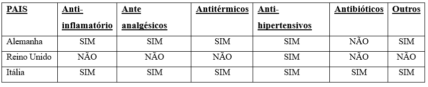

Até 2024, o Brasil poderá se tornar o 6º país com maior consumo de drogas no mundo. Além disso, as vendas devem atingir US$ 38 bilhões. Nessa perspectiva, o cenário parece positivo, mas as questões tornam-se mais complexas quando se trata do descarte ambientalmente correto desses medicamentos. Segundo Patrícia Rondon, professora do curso de farmácia da Uninter, antes de sabermos como nos livrar dos medicamentos de maneira adequada, precisamos nos lembrar da nossa prática consciente de uso de medicamentos. O professor Lee explicou: “O uso racional de medicamentos significa usar o medicamento quando o paciente precisa dele e usá-lo em condições apropriadas, ou seja, na dose apropriada”. A professora do curso Carolina Marques lembra que os maiores problemas com o descarte de medicamentos não estão relacionados aos hospitais ou à indústria, mas ao uso doméstico. “A maioria das pessoas não abusa das drogas porque quer contaminá-las, porque a maioria das pessoas não sabe o que fazer com as sobras”, disse ele. A rota pela qual as drogas entram no meio ambiente é relativamente curta. O corpo elimina sozinho a droga, o que significa que seu destino já é o rio.
Desenvolver projetos para melhorar o monitoramento da gestão e armazenamento seguro de medicamentos é uma iniciativa importante para garantir a eficácia do tratamento e o bem-estar das pessoas que dependem desses medicamentos. Reconhecendo esta responsabilidade, prestamos especial atenção à monitorização contínua e inovadora dos nossos produtos farmacêuticos, focando-nos não só na sua integridade química, mas também nas condições ambientais em que são armazenados. Considerando a sensibilidade de muitos medicamentos às alterações térmicas, o armazenamento inadequado a temperaturas inadequadas é um dos desafios mais prementes. Para resolver esse problema, implementamos um circuito desenvolvido no Arduino UNO, um dispositivo versátil capaz de monitorar de forma precisa e contínua a iluminação, temperatura, umidade e níveis de estoque.
